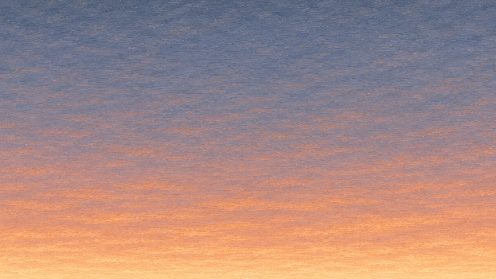
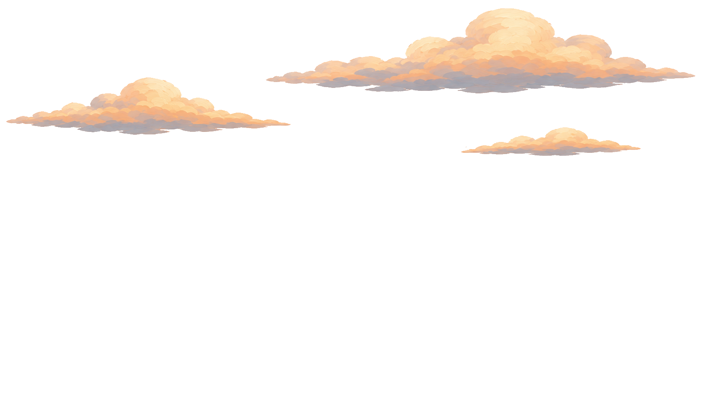
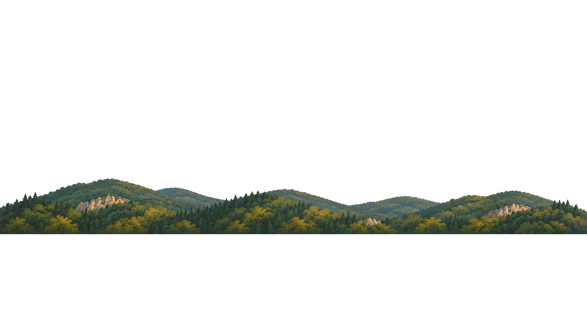
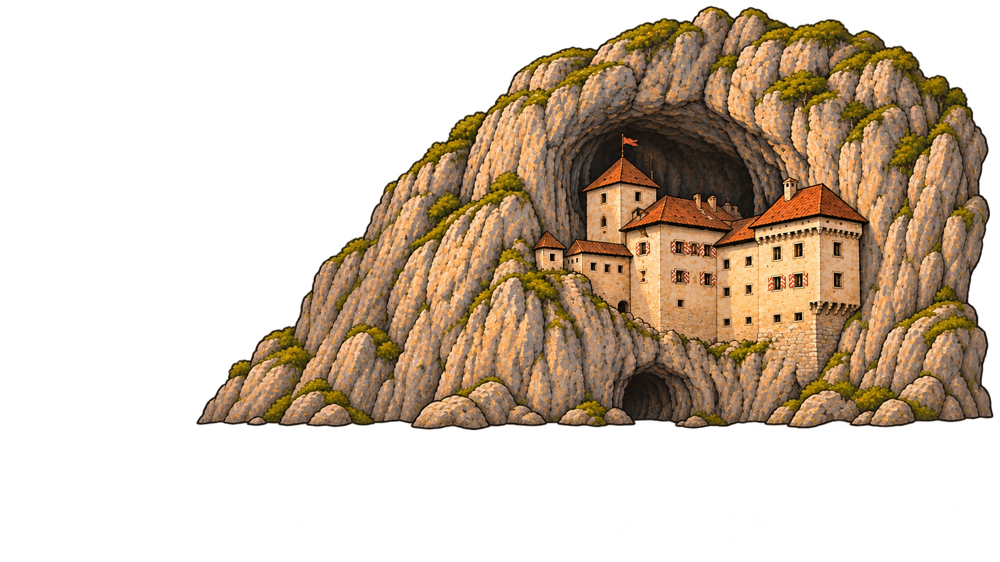
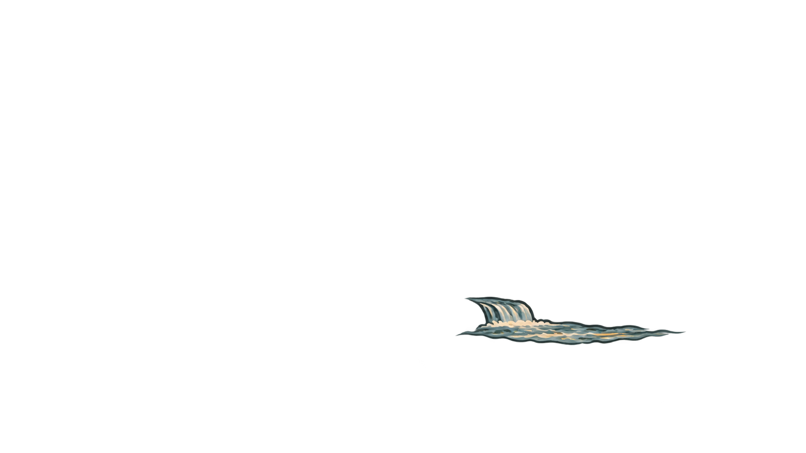
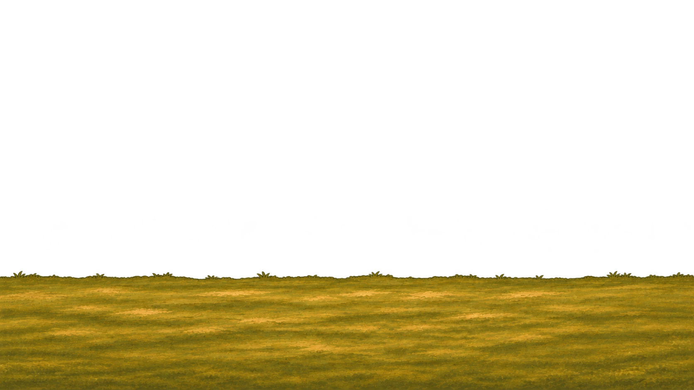
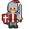
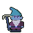
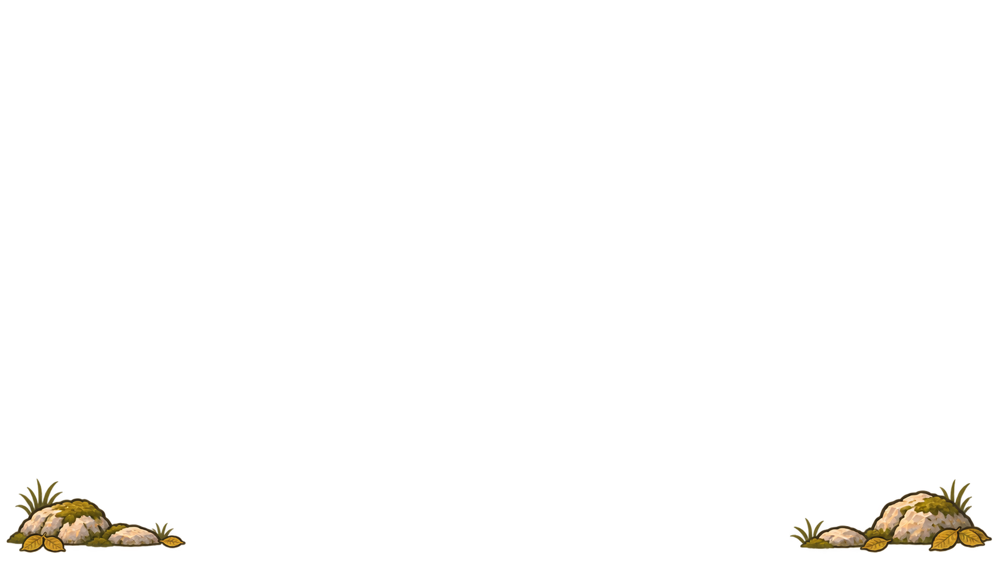

Approaching Predjamski grad
Scrub or play a rightward journey through the Karst valley. The castle remains attached to its cliff while the distant beech-and-fir ridge, cave stream, grass lane and close stones pass at different depths.









How the speeds work: the grass lane is the 1.0× reference. The close rocks and plants move at 1.25×, so they pass faster and feel nearer; the distant ridge moves at 0.12×, clouds and sky around 0.02×, and the castle cliff around 0.38×. The cave stream moves just a little faster than the cliff (0.42×) to suggest water without detaching it from its cave mouth. These are first-pass art-direction ratios; reduce the near edge toward 1.1× if it feels detached from the lane.
Open the static layer composite · See the approved scene preview